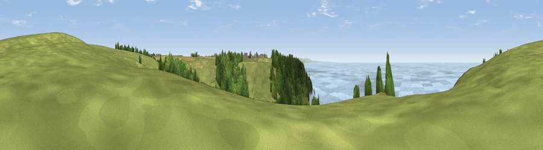

Viewpoint near Morwenstow
#2463 in England · top 10% of its area beats it · near MorwenstowThe view, rendered

A 360° render of this exact spot computed from the terrain model, tree cover and land cover — summer colours, afternoon light, calibrated against photographs of famous viewpoints. Real trees, hedges and buildings will differ in detail.
The panorama
Grey silhouette: terrain skyline in each direction (720 bearings, Earth curvature and refraction included). Dashed green: skyline with trees (+15 m) and buildings (+8 m) as obstacles. Blue strip: how far the ground is visible on each bearing.
Where the view opens
Wedge length = distance to the farthest visible ground on that bearing (vegetation-aware). Rings at 10, 25 and 50 km.
What fills the view
40% water · 37% grassland · 22% woodland ·
Angular shares of the visible panorama (visual magnitude), not map area. Landscape diversity 0.48 (0–1 Shannon).
Key numbers
More beautiful places nearby
The staircase of upgrades: each row has a higher view potential than everything closer. Driving times are estimates from straight-line distance, calibrated against real road routing — check an actual route before setting out.
| Place | Direction | Drive | Score |
|---|---|---|---|
| Viewpoint near Morwenstow | NNE · 0 km | ~1 min | 77.9 |
| Embury Beacon | NNE · 6 km | ~13 min | 83.8 |
| Viewpoint near Bucks Mills | ENE · 20 km | ~34 min | 84.0 |
| Viewpoint near Crackington Haven | SSW · 21 km | ~35 min | 88.1 |
| Viewpoint near Combe Martin | NE · 52 km | ~74 min | 88.9 |
| Holdstone Hill | NE · 54 km | ~75 min | 90.2 |
| The Knoll | E · 136 km | ~159 min | 91.0 |
50.89490, -4.56002 · source: screening · position refined by local search. Computed location — check access rights before visiting.